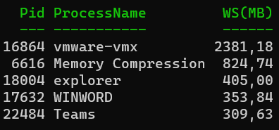
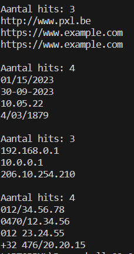

PXL · Uitgebreide oefening 02
Opdrachten
Navigeer per onderdeel door de antwoorden en eindcontrole.
Deel 1
Selecteren, filteren en sorteren
1. Processen selecteren met Select-Object
Gebruik voor alle deelvragen de uitvoer van Get-Process als invoer.
1.1 Toon de eerste vijf processen
Get-Process | Select-Object -First 5
Geen echt geavanceerd antwoord nodig:
Get-Process | Select-Object -First 5Optioneel, meteen alleen de nuttige kolommen tonen:
Get-Process | Select-Object -First 5 -Property ProcessName, Id, CPU
1.2 Toon de laatste vijf processen
Get-Process | Select-Object -Last 5
Geen echt geavanceerd antwoord nodig:
Get-Process | Select-Object -Last 5Optioneel:
Get-Process | Select-Object -Last 5 -Property ProcessName, Id
1.3 Toon het tweede proces
Get-Process | Select-Object -Index 1
Get-Process | Select-Object -Index 1De telling begint bij 0: index 0 is het eerste proces, index 1 het tweede.
Hetzelfde resultaat met andere parameters:
Get-Process | Select-Object -Skip 1 -First 1 → sla het eerste over en neem er dan één
1.4 Toon alle processen vanaf het vijfde proces
Get-Process | Select-Object -Skip 4
Geen echt geavanceerd antwoord nodig:
Get-Process | Select-Object -Skip 4 (de eerste vier overslaan, dus vanaf het vijfde).Optioneel, met alleen de nuttige kolommen:
Get-Process | Select-Object -Skip 4 -Property ProcessName, Id
1.5 Toon de unieke procesnamen
Toon alleen de property Name en zorg dat iedere procesnaam maar één keer voorkomt.
Get-Process | Select-Object -Property Name -Unique
-Unique = om elke procesnaam maar 1-malig weer te geven
Get-Process | Select-Object -ExpandProperty Name -UniqueMet
-ExpandProperty krijg je gewone tekst (de namen zelf) in plaats van objecten met een kolom Name (Course, hoofdstuk 03).Gesorteerd en uniek in één stap:
Get-Process | Sort-Object Name -Unique | Select-Object NameLet op:
Select-Object -Unique is hoofdlettergevoelig. Met -CaseInsensitive (zie de syntax van Select-Object in de Course) tellen Notepad en notepad als dezelfde naam.
1.6 Tel de unieke procesnamen
Toon uitsluitend het aantal unieke procesnamen op je systeem.
Get-Process | Select-Object -Property Name -Unique | Measure-Object | Select-Object count
(Get-Process | Select-Object -ExpandProperty Name -Unique).Count → enkel het getal, bv. 129Met
Group-Object (Course, hoofdstuk 03): elke groep is één unieke naam, dus het aantal groepen is het aantal unieke namen:(Get-Process | Group-Object -Property Name).CountOf alleen de waarde van
Count uit Measure-Object:Get-Process | Select-Object -Property Name -Unique | Measure-Object | Select-Object -ExpandProperty Count
2. Grootste werksets
Toon de vijf processen met de grootste werkset. De uitvoer bevat:
- de proces-ID met kolomnaam
Pid; - de procesnaam met kolomnaam
ProcessName; - de werkset in megabytes met kolomnaam
WS(MB).
Sorteer eerst aflopend op de property WS en selecteer daarna de eerste vijf processen.
Verwachte structuur — de waarden verschillen per systeem:

Get-Process | Sort-Object -Descending WS | Select-Object -First 5 @{N='Pid';E={$_.Id}}, ProcessName, @{N='WS(MB)';E={[math]::Round($_.WS / 1MB, 2)}}
Met
-Top van Sort-Object (Course, hoofdstuk 03) sorteer en selecteer je in één stap:Get-Process | Sort-Object WS -Descending -Top 5 | Select-Object @{N='Pid';E={$_.Id}}, ProcessName, @{N='WS(MB)';E={'{0:N2}' -f ($_.WS / 1MB)}}@{N='...';E={...}} is een berekende property: N (Name) is de kolomnaam, E (Expression) berekent de waarde.$_.WS / 1MB zet bytes om naar megabytes; '{0:N2}' -f toont het getal met twee decimalen (Course, hoofdstuk 03).
3. Processen filteren
3.1 Procesnaam begint met p
Toon alle processen waarvan de procesnaam met de letter p begint. Geef minimaal twee werkende oplossingen.
- Get-Process p*
- Get-Process -ProcessName p*
- Get-Process -Name p*
Twee extra oplossingen met
Where-Object:Get-Process | Where-Object ProcessName -like 'p*' → wildcard: * = eender welke tekensGet-Process | Where-Object ProcessName -match '^p' → reguliere expressie: ^ = begin van de tekst-like en -match zijn niet hoofdlettergevoelig. Alleen een kleine p: -clike 'p*' of -cmatch '^p'.
3.2 Processen met een grafisch venster
Toon alle processen die een zichtbaar grafisch venster hebben.
Tip: Onderzoek de properties waarvan de naam Window bevat.
1. Welke processen bevatten "Window"?
Get-Process | Get-Member -Name *Window*
2. Bekijk welke waarden erin staan.
Get-Process | Select-Object ProcessName, MainWindowTitle, MainWindowHandle*
Je zal zien dat processen met een venster een titel hebben(middenste kolom) en een handle(laatste kolom) hebben die geen waarde 0 heeft.
3. Filter op dat patroon
Get-Process | Where-Object MainWindowTitle -ne ''
OF
Get-Process | Where-Object MainWindowHandle -ne 0
-ne staat voor not equal. Bij het eerste commando geef je dus aan dat je alle processen wilt waarvan de MainWindowTitle niet overeenkomt met een lege tekst. Bij het tweede commando geef je aan dat je alle processen wilt waarvan de MainWindowHandle niet overeenkomt met 0.
Beide filters gecombineerd, met alleen de nuttige kolommen:
Get-Process | Where-Object MainWindowHandle -ne 0 | Select-Object ProcessName, Id, MainWindowTitle | Sort-Object ProcessNameMainWindowHandle is het nummer van het hoofdvenster: 0 betekent "geen venster". Daarom is filteren op de handle betrouwbaarder dan op de titel: een venster kan ook een lege titel hebben.
3.3 Minstens 30 seconden CPU-tijd
Toon alle processen die minstens 30 seconden CPU-tijd hebben gebruikt. Geef minimaal twee werkende oplossingen.
1. Zoek eerst naar een waarde i.v.m. CPU-tijd.
Get-Process | Get-Member -Name *CPU*
2. Filter al met een Where-Object welke processen een tijd hebben van minstens 30 seconden.
Get-Process | Where-object CPU -ge 30
-ge = greater than and equal to.
3. Toon nu de ProcessName en CPU waarden.
Get-Process | Where-Object CPU -ge 30 | Select-Object ProcessName, CPU
OF
Get-Process | Where-Object { $_.CPU -ge 30 } | Select-Object ProcessName, CPU
OF
Get-Process | Where-Object TotalProcessorTime -ge '00:00:30' | Select-Object ProcessName, TotalProcessorTime
Gesorteerd, zodat de grootste verbruikers bovenaan staan:
Get-Process | Where-Object CPU -ge 30 | Sort-Object CPU -Descending | Select-Object ProcessName, Id, CPUMet
TotalProcessorTime (een tijdsduur) kan je ook het aantal seconden opvragen:Get-Process | Where-Object { $_.TotalProcessorTime.TotalSeconds -ge 30 } | Select-Object ProcessName, TotalProcessorTimeCPU is het aantal seconden processortijd. Zonder administratorrechten kan PowerShell deze waarde voor sommige systeemprocessen niet lezen; die processen vallen dan weg uit de filter.
3.4 Sorteren op procesnaam en ID
Toon ProcessName en Id van alle processen. Sorteer eerst oplopend op procesnaam en bij gelijke namen aflopend op ID.

Get-Process | Sort-Object @{Expression='ProcessName';Ascending=$true}, @{Expression='Id';Descending=$true} | Select-Object ProcessName, Id
Oplopend is de standaard, dus alleen voor
Id is een hashtable nodig:Get-Process | Sort-Object ProcessName, @{Expression='Id';Descending=$true} | Select-Object ProcessName, IdZo staan bv. alle
svchost-processen samen, met het hoogste Id eerst.
4. Services filteren
4.1 Automatisch gestarte services
Toon de services waarvan het opstarttype Automatic is.
Get-Service | Where-Object -Property StartType -eq 'Automatic'
Met de nuttige kolommen en gesorteerd:
Get-Service | Where-Object StartType -eq 'Automatic' | Sort-Object Status, Name | Select-Object Name, Status, StartTypeExtra: automatische services die toch gestopt zijn (vaak het eerste wat je controleert bij een probleem):
Get-Service | Where-Object { $_.StartType -eq 'Automatic' -and $_.Status -eq 'Stopped' }
4.2 Draaiende services die niet gestopt kunnen worden
Toon services die:
- de status
Runninghebben; - niet gestopt kunnen worden.
Geef minimaal twee werkende oplossingen.
Get-Service | Where-Object -Property Status -eq 'running' | Where-Object -Property CanStop -eq $false
OR
Get-Service | Where-Object {$_.Status -eq 'running' -and $_.CanStop -eq $false}
Derde oplossing met
-not (Course, hoofdstuk 03):Get-Service | Where-Object { $_.Status -eq 'Running' -and -not $_.CanStop } | Select-Object Name, Status, CanStopMet
Select-Object Name, Status, CanStop zie je meteen het bewijs: elke rij toont Running en False.
5. Bestanden filteren en tellen
Gebruik een zelfgekozen testmap met enkele onderliggende mappen. Vermeld het gebruikte pad in answers.md.
C:\powershell
Een testmap met submappen en enkele bestanden maken (zoals in hands-on 01):
New-Item -Path C:\powershell\testmap\submap1 -ItemType Directory -ForceNew-Item -Path C:\powershell\testmap\submap2 -ItemType Directory -ForceNew-Item -Path C:\powershell\testmap\submap1 -Name 'PathProcessing.txt' -ItemType FileControleren:
Get-ChildItem -Path C:\powershell -Recurse -Directory
5.1 Bestanden van minstens drie dagen oud
Toon recursief alle bestanden waarvan LastWriteTime minstens drie dagen in het verleden ligt.
Get-ChildItem -File -Path "C:\powershell\" -Recurse | Where-Object {$_.LastWriteTime -le (Get-Date).AddDays(-3)}
Gesorteerd en met alleen de nodige kolommen:
Get-ChildItem -File -Path C:\powershell -Recurse | Where-Object LastWriteTime -le (Get-Date).AddDays(-3) | Sort-Object LastWriteTime | Select-Object FullName, LastWriteTime(Get-Date).AddDays(-3) is het moment van precies drie dagen geleden. -le (kleiner of gelijk) betekent: op dat moment of vroeger gewijzigd.
5.2 Oude tekstbestanden
Toon recursief alle .txt-bestanden die minstens drie dagen oud zijn.
Get-ChildItem -File -Filter *.txt -Path "C:\powershell\" -Recurse | Where-Object {$_.LastWriteTime -le (Get-Date).AddDays(-3)}
Get-ChildItem -File -Path C:\powershell -Recurse -Filter *.txt | Where-Object LastWriteTime -le (Get-Date).AddDays(-3) | Select-Object FullName, LastWriteTime-Filter *.txt filtert al bij het opvragen en is daardoor sneller dan achteraf filteren met Where-Object Extension -eq '.txt'."Oud" betekent hier hetzelfde als in 5.1:
LastWriteTime, het moment van de laatste wijziging.
5.3 Tel oude tekstbestanden
Toon alleen het aantal .txt-bestanden dat minstens drie dagen oud is.
(Get-ChildItem -File -Filter *.txt -Path "C:\powershell\" -Recurse | Where-Object {$_.LastWriteTime -le (Get-Date).AddDays(-3)}).Count
OR
(Get-ChildItem -File -Filter *.txt -Path "C:\powershell\" -Recurse | Where-Object {$_.LastWriteTime -le (Get-Date).AddDays(-3)} | Measure-Object).Count
Get-ChildItem -File -Path C:\powershell -Recurse -Filter *.txt | Where-Object LastWriteTime -le (Get-Date).AddDays(-3) | Measure-Object | Select-Object -ExpandProperty Count-ExpandProperty Count geeft alleen het getal, zonder kolomtitel.
5.4 Tweede letter is a
Tel recursief alle bestanden waarvan de tweede letter van de bestandsnaam a is. PathProcessing.txt is een voorbeeld van een overeenkomende naam.
(Get-ChildItem -File -Path C:\powershell\ -Recurse -Filter '?a*' | Measure-Object).Count
OR
(Get-ChildItem -File -Path C:\powershell\ -Recurse | Where-Object {$_.Name -like '?a*'}).Count
OR
(Get-ChildItem -File -Path C:\powershell\ -Recurse | Where-Object {$_.Name -match '^.a'}).Count
Hoofdlettergevoelig, alleen een kleine
a als tweede letter:(Get-ChildItem -File -Path C:\powershell -Recurse | Where-Object Name -clike '?a*').Count(Get-ChildItem -File -Path C:\powershell -Recurse | Where-Object Name -cmatch '^.a').Count? (wildcard) en . (regex) betekenen allebei: precies één willekeurig teken. -like en -match tellen ook een hoofdletter A mee.
6. Uitvoerbare bestanden onderzoeken
Let op: Deze opdrachten lezen systeemmappen en kunnen meldingen over ontbrekende toegangsrechten geven. Ze wijzigen of verwijderen geen bestanden. Gebruik -ErrorAction SilentlyContinue waar nodig.
6.1 Filter uitvoerbare bestanden in C:\Windows
Toon alle .exe-bestanden rechtstreeks in C:\Windows waarvan:
- de bestandsgrootte groter is dan 1 MB; of
- de bestandsgrootte exact 28.672 bytes is.
Get-ChildItem -File *.exe -Path C:\Windows\ -ErrorAction SilentlyContinue | Where-Object {$_.Length -gt 1MB -or $_.Length -eq 28672}
Met de
-Filter-parameter voluit en alleen de nuttige kolommen:Get-ChildItem -Path C:\Windows -File -Filter *.exe -ErrorAction SilentlyContinue | Where-Object { $_.Length -gt 1MB -or $_.Length -eq 28672 } | Select-Object Name, Length1MB is 1.048.576 bytes. -or betekent: minstens één van de twee voorwaarden moet waar zijn.
6.2 Extra: zoek recursief met diepte 2
Voer dezelfde filter uit in C:\Windows en de onderliggende mappen, met een maximale recursiediepte van 2.
Get-ChildItem -Recurse -Depth 2 -File *.exe -Path C:\Windows\ -ErrorAction SilentlyContinue | Where-Object {$_.Length -gt 1MB -or $_.Length -eq 28672}
Get-ChildItem -Path C:\Windows -File -Filter *.exe -Depth 2 -ErrorAction SilentlyContinue | Where-Object { $_.Length -gt 1MB -or $_.Length -eq 28672 } | Select-Object FullName, Length-Depth 2 zoekt in C:\Windows en nog twee niveaus submappen daaronder. -Depth zoekt zelf al in submappen, dus -Recurse mag je weglaten. FullName toont in welke map elk bestand staat.
6.3 Tien grootste bestanden
Toon de tien grootste bestanden rechtstreeks in C:\Windows\System32. Toon minstens Name, Length en FullName.
Get-ChildItem -File C:\Windows\System32\ -ErrorAction SilentlyContinue | Sort-Object Length -Descending -Top 10 | Select-Object Name,Length,FullName
OR
Get-ChildItem -File C:\Windows\System32\ -ErrorAction SilentlyContinue | Sort-Object Length -Descending | Select-Object -First 10 Name,Length,FullName
Met
-Top en de grootte in MB (Course, hoofdstuk 03):Get-ChildItem -Path C:\Windows\System32 -File -ErrorAction SilentlyContinue | Sort-Object Length -Descending -Top 10 | Select-Object Name, Length, @{N='Size(MB)';E={'{0:N2}' -f ($_.Length / 1MB)}}, FullName
7. Procesproperties en meervoudig sorteren
7.1 Geheugenproperties
Toon van alle processen:
Name;Id;PM— pageable memory;NPM— non-paged memory.
Sorteer aflopend op procesnaam.
Get-Process | Sort-Object -Property ProcessName -Descending | Select-Object Name,Id,PM,NPM
Met het geheugen in MB in plaats van bytes:
Get-Process | Sort-Object ProcessName -Descending | Select-Object Name, Id, @{N='PM(MB)';E={'{0:N2}' -f ($_.PM / 1MB)}}, @{N='NPM(MB)';E={'{0:N2}' -f ($_.NPM / 1MB)}}PM en NPM zijn aliassen (AliasProperty) voor PagedMemorySize64 en NonpagedSystemMemorySize64. Controle: Get-Process | Get-Member -MemberType AliasProperty
7.2 Aflopend sorteren op naam en ID
Toon alle processen met één pipeline, eerst aflopend gesorteerd op procesnaam en vervolgens aflopend op proces-ID.
Get-Process | Sort-Object -Descending ProcessName, Id
Geen echt geavanceerd antwoord nodig:
-Descending geldt voor beide properties.Optioneel, met hashtables kan je per property een andere richting kiezen (zie 3.4):
Get-Process | Sort-Object @{Expression='ProcessName';Descending=$true}, @{Expression='Id';Descending=$true}
Deel 2
Scripts en meten
8. Script HowManyFilesDir.ps1
Maak scripts/HowManyFilesDir.ps1 dat:
- het aantal bestanden rechtstreeks in
C:\Windowstoont; - het aantal mappen rechtstreeks in
C:\Windowstoont; - het aantal actieve processen toont;
- comment-based help bevat die met
Get-Helpkan worden opgevraagd.
Verwachte structuur — de aantallen verschillen per systeem:

Test ook:
Get-Help .\scripts\HowManyFilesDir.ps1 -Full<#
.SYNOPSIS
Shows the amount of files, directories and processes.
.DESCRIPTION
This script counts the amount of files en directories directly inside C:\Windows and the amount of active processes on the system.
.EXAMPLE
.\HowmanyFilesDir.ps1
Shows the amounts for C:\Windows and the amount of processes.
#>
$path = 'C:\Windows\'
$filecount = (Get-ChildItem $path -File).Count
$dircount = (Get-ChildItem $path -Directory).Count
$procount = (Get-Process).Count
Write-Output "Information of path: $path"
Write-Output "File count: $filecount"
Write-Output "Directory count: $dircount"
Write-Output "Amount of processes: $procount"
<#
.SYNOPSIS
Toont het aantal bestanden en mappen in C:\Windows en het aantal processen.
.DESCRIPTION
Telt de bestanden en de mappen die rechtstreeks in C:\Windows staan
en het aantal actieve processen.
.NOTES
Author: Angelo Switon (PXL Student)
.EXAMPLE
.\Scripts\HowManyFilesDir.ps1
#>
$path = 'C:\Windows\'
$fileCount = (Get-ChildItem -Path $path -File -ErrorAction SilentlyContinue | Measure-Object).Count
$dirCount = (Get-ChildItem -Path $path -Directory -ErrorAction SilentlyContinue | Measure-Object).Count
$procCount = (Get-Process | Measure-Object).Count
Write-Output "Information of path $path"
Write-Output "File count: $fileCount"
Write-Output "Directory count: $dirCount"
Write-Output "Aantal processen: $procCount"-File en -Directory houden bestanden en mappen apart. Zonder -File telt Get-ChildItem beide samen.Controle:
Get-Help .\Scripts\HowManyFilesDir.ps1 -Full
9. Hotfixes
Opmerking: Get-HotFix is alleen beschikbaar op Windows. De resultaten verschillen per oefensysteem en sommige installatiedatums kunnen ontbreken.
9.1 Zoek de juiste cmdlet
Gebruik het PowerShell-helpsysteem om een cmdlet te vinden die informatie over geïnstalleerde Windows-hotfixes toont.
Get-Command -Noun *hotfix*
Met het helpsysteem zelf, zoals de vraag stelt:
Get-Help *hotfix* → Get-HotFixGet-Help Get-HotFix -Examples → voorbeelden van het gebruik
9.2 Toon alle geïnstalleerde hotfixes
Get-HotFix
Geen echt geavanceerd antwoord nodig:
Get-HotFixOptioneel, alleen het aantal:
(Get-HotFix | Measure-Object).Count
9.3 Sorteer op installatiedatum
Sorteer de hotfixes op InstalledOn en toon alleen:
InstalledOn;InstalledBy;HotFixId.
Get-HotFix | Sort-Object InstalledOn | Select-Object InstalledOn,InstalledBy,HotFixId
Nieuwste eerst, en zonder hotfixes waarvan de datum ontbreekt:
Get-HotFix | Where-Object InstalledOn -ne $null | Sort-Object InstalledOn -Descending | Select-Object InstalledOn, InstalledBy, HotFixIdZonder datum komt een hotfix bij oplopend sorteren bovenaan te staan;
Where-Object InstalledOn -ne $null laat die weg.
9.4 Sorteer op beschrijving
Sorteer de hotfixes op Description en toon alleen:
InstalledOn;Description;HotFixId.
Get-HotFix | Sort-Object Description | Select-Object InstalledOn,Description,HotFixId
Per beschrijving gesorteerd en daarbinnen op datum:
Get-HotFix | Sort-Object Description, InstalledOn | Select-Object InstalledOn, Description, HotFixIdHoeveel hotfixes per soort? (
Group-Object, Course hoofdstuk 03)Get-HotFix | Group-Object -Property Description | Select-Object Name, Count → bv. Security Update 2, Update 4
10. Script MetenIsWeten.ps1
Gebruik example_files/mydata.txt als invoer. Maak scripts/MetenIsWeten.ps1 dat het volgende toont:
- het aantal regels;
- het aantal woorden;
- het aantal tekens.

Opmerking: De oorspronkelijke screenshot toont 208 tekens. Met het meegeleverdeexample_files/mydata.txtgeeftMeasure-Object -Character207 tekens; dit is voor deze dataset het correcte resultaat.
Voorzie comment-based help en gebruik Get-Content en Measure-Object.
<#
.SYNOPSIS
Shows the amount of lines, words and characters inside mydata.txt
.DESCRIPTION
This script counts all the amounts.
.EXAMPLE
.\MetenIsWeten.ps1
Shows the amount of lines, words and characters inside mydata.txt
#>
$sourcefile = '.\example_files\mydata.txt'
$linecount = (Get-Content $sourcefile | Measure-Object -Line).Lines
$wordcount = (Get-Content $sourcefile | Measure-Object -Word).Words
$charcount = (Get-Content $sourcefile | Measure-Object -Character).Characters
Write-Output "The file mydata.txt contains"
Write-Output "$linecount line(es)"
Write-Output "$wordcount word(s)"
Write-Output "$charcount character(s)"
Eén keer
Measure-Object met de drie parameters samen:<#
.SYNOPSIS
Toont het aantal lijnen, woorden en tekens in mydata.txt.
.DESCRIPTION
Leest example_files\mydata.txt in en meet het aantal lijnen, woorden
en tekens met Measure-Object.
.NOTES
Author: Angelo Switon (PXL Student)
.EXAMPLE
.\Scripts\MetenIsWeten.ps1
#>
$sourceFile = '.\example_files\mydata.txt'
$result = Get-Content -Path $sourceFile | Measure-Object -Line -Word -Character
Write-Output 'Het bestand mydata.txt bevat:'
Write-Output "- $($result.Lines) lijn(en)"
Write-Output "- $($result.Words) woord(en)"
Write-Output "- $($result.Characters) letter(s)"3 lijnen, 34 woorden, 207 tekens.Get-Content leest het bestand regel per regel. Measure-Object -Character telt de tekens per regel, zonder de regeleinden. Daarom is het resultaat 207 en niet 208.
Deel 3
Filteren met reguliere expressies
11. Script FilterWithRegExp.ps1
Gebruik example_files/regdata.txt als invoer en koppel de volledige inhoud aan de variabele $text.
$text = Get-Content .\example_files\regdata.txt -RawMaak scripts/FilterWithRegExp.ps1. Zoek voor iedere categorie alle overeenkomsten, toon het aantal gevonden waarden en toon daarna de waarden zelf.
<#
.SYNOPSIS
Zoekt met reguliere expressies verschillende soorten gegevens in regdata.txt.
.DESCRIPTION
Het script leest example_files\regdata.txt volledig in en zoekt per categorie
(e-mailadressen, URL's, datums, IP-adressen, telefoonnummers, HTML-tags)
alle overeenkomsten. Per categorie wordt eerst het aantal getoond, daarna de waarden.
.EXAMPLE
.\scripts\FilterWithRegExp.ps1
#>
$text = Get-Content .\example_files\regdata.txt -Raw
# E-mailadressen: woord @ woord . woord
$hits = $text | Select-String -Pattern '\w+@\w+\.\w+' -AllMatches
Write-Output "Aantal e-mailadressen: $($hits.Matches.Count)"
$hits.Matches.Value
# URL's: http of https, dan :// en daarna woordtekens en punten
$hits = $text | Select-String -Pattern 'https?://[\w.]+' -AllMatches
Write-Output "`nAantal URL's: $($hits.Matches.Count)"
$hits.Matches.Value
# Datums: eerst de telefoonnummers verwijderen, dan dag/maand met 1-2 cijfers, gescheiden door /, - of ., jaar met 4 of 2 cijfers
$textWithoutPhones = $text -replace '(\+32 ?\d{3}|0\d{2,3})[ /]\d{2}\.\d{2}\.\d{2}', ''
$hits = $textWithoutPhones | Select-String -Pattern '\b\d{1,2}[/.-]\d{1,2}[/.-](\d{4}|\d{2})\b' -AllMatches
Write-Output "`nAantal datums: $($hits.Matches.Count)"
$hits.Matches.Value
# IP-adressen: 4 groepen van 1-3 cijfers met punten, zonder het subnetmasker (/24)
$hits = $text | Select-String -Pattern '\b\d{1,3}\.\d{1,3}\.\d{1,3}\.\d{1,3}\b' -AllMatches
Write-Output "`nAantal IP-adressen: $($hits.Matches.Count)"
$hits.Matches.Value
# Belgische telefoonnummers: zonenummer (0.. of +32 ...), dan / of spatie, dan xx.xx.xx
$hits = $text | Select-String -Pattern '(\+32 ?\d{3}|0\d{2,3})[ /]\d{2}\.\d{2}\.\d{2}' -AllMatches
Write-Output "`nAantal telefoonnummers: $($hits.Matches.Count)"
$hits.Matches.Value
# HTML-tags: < gevolgd door alles behalve >, dan >
$hits = $text | Select-String -Pattern '<[^>]+>' -AllMatches
Write-Output "`nAantal HTML-tags: $($hits.Matches.Count)"
$hits.Matches.Value
Met
[regex]::Matches() (zie de tip bij 11.4): je krijgt meteen alle overeenkomsten, met .Count en .Value.<#
.SYNOPSIS
Zoekt URL's, datums, IPv4-adressen en Belgische telefoonnummers in regdata.txt.
.NOTES
Author: Angelo Switon (PXL Student)
.EXAMPLE
.\Scripts\FilterWithRegExp.ps1
#>
$text = Get-Content .\example_files\regdata.txt -Raw
$phonePattern = '(\+32 ?\d{3}|0\d{2,3})[ /]\d{2}\.\d{2}\.\d{2}'
# URL's
$hits = [regex]::Matches($text, 'https?://[\w.]+')
Write-Output "Aantal hits: $($hits.Count)"
$hits.Value
# Datums (eerst de telefoonnummers weghalen)
$textWithoutPhones = $text -replace $phonePattern, ''
$hits = [regex]::Matches($textWithoutPhones, '\b\d{1,2}[/.-]\d{1,2}[/.-](\d{4}|\d{2})\b')
Write-Output "`nAantal hits: $($hits.Count)"
$hits.Value
# IPv4-adressen (zonder /24)
$hits = [regex]::Matches($text, '\b\d{1,3}\.\d{1,3}\.\d{1,3}\.\d{1,3}\b')
Write-Output "`nAantal hits: $($hits.Count)"
$hits.Value
# Belgische telefoonnummers
$hits = [regex]::Matches($text, $phonePattern)
Write-Output "`nAantal hits: $($hits.Count)"
$hits.Value$phonePattern en wordt twee keer gebruikt: om te zoeken én om de nummers weg te halen vóór het zoeken naar datums.Resultaat: 3 URL's, 4 datums, 3 IP-adressen en 4 telefoonnummers, zoals in de voorbeeldafbeelding.
11.1 URL's
Herken URL's die met http:// of https:// beginnen.
$hits = $text | Select-String -Pattern 'https?://[\w.]+' -AllMatches
Write-Output "Aantal URL's: $($hits.Matches.Count)"
$hits.Matches.Value
Algemener patroon dat ook paden na de domeinnaam meeneemt (bv.
https://www.pxl.be/opleidingen):[regex]::Matches($text, 'https?://[^\s"<>,]+').Values? = de s mag er staan of niet. [^\s"<>,]+ = één of meer tekens die geen spatie, aanhalingsteken, <, > of komma zijn. Op regdata.txt geeft dit dezelfde 3 URL's.
11.2 Datums
Herken de datumvormen uit het databestand met /, - of . als scheidingsteken. Ondersteun de aanwezige jaartallen met twee of vier cijfers.
# Telefoonnummers eerst verwijderen, zodat hun xx.xx.xx-stukken niet als datum gezien worden
$textWithoutPhones = $text -replace '(\+32 ?\d{3}|0\d{2,3})[ /]\d{2}\.\d{2}\.\d{2}', ''
$hits = $textWithoutPhones |
Select-String -Pattern '\b\d{1,2}[/.-]\d{1,2}[/.-](\d{4}|\d{2})\b' -AllMatches
Write-Output "Aantal datums: $($hits.Matches.Count)"
$hits.Matches.Value
Met benoemde groepen (named capture groups, Course hoofdstuk 04) haal je dag, maand en jaar apart uit elke datum:
$textWithoutPhones = $text -replace '(\+32 ?\d{3}|0\d{2,3})[ /]\d{2}\.\d{2}\.\d{2}', ''
[regex]::Matches($textWithoutPhones, '\b(?<dag>\d{1,2})[/.-](?<maand>\d{1,2})[/.-](?<jaar>\d{4}|\d{2})\b') |
Select-Object Value, @{N='Deel1';E={$_.Groups['dag'].Value}}, @{N='Deel2';E={$_.Groups['maand'].Value}}, @{N='Jaar';E={$_.Groups['jaar'].Value}}34.56.78, 12.34.56, 23.24.55 en 20.20.15 uit de telefoonnummers.Let op:
01/15/2023 is maand/dag, 30-09-2023 is dag-maand. Een regex herkent de vorm, niet de betekenis; daarom heten de kolommen hier Deel1 en Deel2.
11.3 IPv4-adressen
Herken IPv4-adressen en toon het subnetmasker, bijvoorbeeld /24, niet als onderdeel van het adres.
$hits = $text | Select-String -Pattern '\b\d{1,3}\.\d{1,3}\.\d{1,3}\.\d{1,3}\b' -AllMatches
Write-Output "Aantal IP-adressen: $($hits.Matches.Count)"
$hits.Matches.Value
Het adres en het subnetmasker apart tonen met benoemde groepen:
[regex]::Matches($text, '\b(?<ip>\d{1,3}(\.\d{1,3}){3})(/(?<mask>\d{1,2}))?\b') |
Select-Object @{N='IP';E={$_.Groups['ip'].Value}}, @{N='Masker';E={$_.Groups['mask'].Value}}192.168.0.1, 10.0.0.1 en 206.10.254.210 met masker 24.Strenger patroon dat alleen getallen van 0 tot 255 aanvaardt (
999.1.1.1 wordt dan niet gevonden):'\b((25[0-5]|2[0-4][0-9]|1[0-9][0-9]|[1-9]?[0-9])\.){3}(25[0-5]|2[0-4][0-9]|1[0-9][0-9]|[1-9]?[0-9])\b'
11.4 Belgische telefoonnummers
Herken de nationale en internationale vormen uit het databestand.
Verwachte structuur:

Tip:Select-String -AllMatchesen[regex]::Matches()geven toegang tot alle gevonden overeenkomsten.
$hits = $text | Select-String -Pattern '(\+32 ?\d{3}|0\d{2,3})[ /]\d{2}\.\d{2}\.\d{2}' -AllMatches
Write-Output "Aantal hits: $($hits.Matches.Count)"
$hits.Matches.Value
Write-Output ""
Zonenummer en abonneenummer apart met benoemde groepen:
[regex]::Matches($text, '(?<zone>\+32 ?\d{3}|0\d{2,3})[ /](?<nummer>\d{2}\.\d{2}\.\d{2})') |
Select-Object Value, @{N='Zone';E={$_.Groups['zone'].Value}}, @{N='Nummer';E={$_.Groups['nummer'].Value}}\+32 ?\d{3} → internationaal: +32, eventueel een spatie, dan 3 cijfers (bv. +32 476)0\d{2,3} → nationaal: een 0 en 2 of 3 cijfers (bv. 012, 0470)[ /] → een spatie of een /\d{2}\.\d{2}\.\d{2} → drie keer twee cijfers met een punt ertussen
Klaar om in te leveren?
Eindcontrole
- Alle losse antwoorden en gebruikte pipelines staan in
answers.md. HowManyFilesDir.ps1,MetenIsWeten.ps1enFilterWithRegExp.ps1staan inscripts/.- Alle drie de scripts bevatten comment-based help.
- Alle scripts voeren uit zonder syntaxfouten.
- De verwachte kolomnamen en sorteervolgordes zijn gebruikt.
- De databestanden staan ongewijzigd in
data/. - Alle bestanden zijn gecommit en gepusht naar GitHub Classroom.